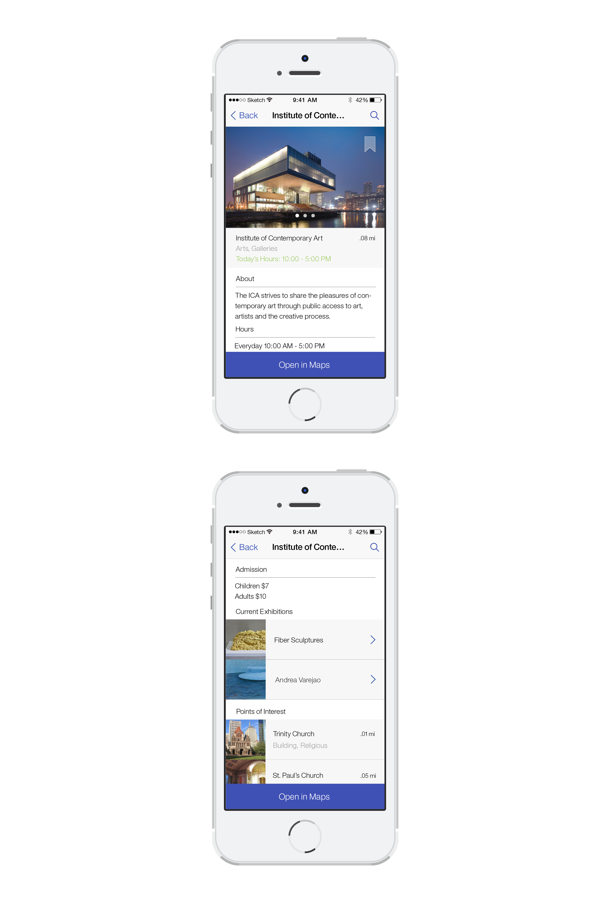
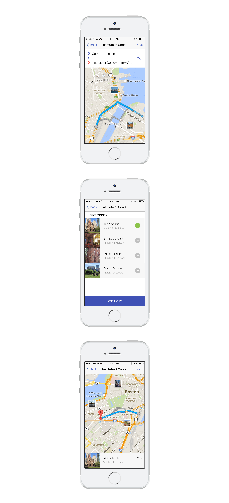

Peruse
Digital, UI/UX
Peruse is a mobile app that connects travelers to nearby museums, exhibitions and historical/cultural landmarks.
Peruse motivates individuals to discover artistic offerings of a new city or to even rediscover their own locale. It provides the immediate capabilities to find visitor information about a museum. The app also supports the ability to create a personalized and exploratory "walking route" for those who have more time during the day to meander. Work in progress.
Context
I wanted to explore how a digital solution could enhance and provide for an offline experience. My motivations for this personal project stem from an urge to discover museums outside of my conventional interests. Museums that weren't the typical Met or MoMa in Manhattan, NYC. Yelp and Google Maps provide relevant information about surrounding points of interest, but are not specifically catered towards the museum visiting or roaming experience.
Goals
Measure the potential of this proposed product, and quickly draft wireframes and mockups within a week. Pursue a concept from start to finish and consider various stakeholders.
Process
I considered the product a few different user scenarios in mind. I designed for an individual who would need quick factual/logistic information about a museum or exhibition. For the more adventurous type, I provided a way to discover points of interest that exist outside of a museum or confined space.
Final Designs
Reflecting on my initial mockup (titled Museum Tracker at the time), led me to observe that while all the necessary information was there, the presentation and interactions of the app were bland. I considered adding to the basic interactions as well as presenting the information in a more thoughful way.
Upon opening the app, the user can toggle list views and search for their next museum visit.
Once the user has selected a museum, they have access to visitor information and can see what's nearby.

If the user decides to create a route, a form and voice activated GPS will guide them to all of their destinations.

Reflection
I rarely have the time to incorporate personal interests during the school year and I'm glad I pushed myself to produce an app design on the fly. There are definitely plenty of areas that I would revisit. I would tackle the Points of Interest area again, and see if there are differing ways to present them. I would find a way for users to interact with one another and possibly build a community of museum discusssion. Perhaps I should bring a Reviews section back into Peruse too.